8 Tosin olulisimat graafikutüüpi
Andmete plottimisel otsib analüütik tasakaalu informatsioonikao ja trendide/mustrite/kovarieeruvuste nähtavaks tegemise vahel. Idee on siin, et teie andmed võivad sisaldada a) juhuslikku müra, b) trende/mustreid, mis teile suurt huvi ei paku ja c) teid huvitavaid varjatud mustreid. Kui andmeid on palju ja need on mürarikkad ja kui igavad trendid/mustrid varjavad huvitavaid trende/mustreid, siis aitab vahest andmete graafiline redutseerimine üldisemale kujule ja nende modelleerimine. Kui andmeid ei ole väga palju, siis tasuks siiski vältida infot kaotavaid graafikuid ning joonistada algsed või ümber arvutatud andmepunktid. Järgnevalt esitame valiku graafikutüüpe erinevat tüüpi andmetele.
8.1 1. Cleveland plot
x- pidev muutuja; y - faktormuutuja
Seda plotti kasuta a) kui iga muutja kohta on üks andmepunkt või b) kui soovid avaldada keskmise koos usalduspiiridega.
Sageli lahendatakse sarnased ülesanded tulpdiagrammidega, mis ei ole aga üldiselt hea mõte, sest tulpdiagrammid juhivad asjatult tähelepanu tulpadele endile, pigem kui nende otstele, mis tegelikult andmete keskmist kajastavad. Kuna inimese aju tahab võrrelda tulpade kõrgusi suhtelistes, mitte absoluutsetes ühikutes (kui tulp A on 30% kõrgem kui tulp B, siis me näeme efekti suurust, mis on u 1/3), peavad tulbad algama mingilt oodatavalt baastasemelt (tavaliselt nullist). See aga võib muuta raskeks huvitavate efektide märkamise, kui need on protsentuaalselt väikesed. Näiteks 5%-ne CO2 taseme tõus atmosfääris on teaduslikult väga oluline, aga tulpdiagrammi korrektselt kasutades tuleb vaevu graafikult välja.
Kõigepealt plottime, mitu korda esinevad diamond tabelis erinevate faktormuutuja clarity tasemetega teemandid (clarity igale tasemele vastab üks number – selle clarity-ga teemantite arv).
dd <- diamonds %>% group_by(clarity) %>% summarise(number_of_diamonds=n())
dd %>% ggplot(aes(x=number_of_diamonds,
y=reorder(clarity, number_of_diamonds))) +
geom_point(size=3) +
theme_bw() +
theme(panel.grid.major.x = element_blank(),
panel.grid.minor.x = element_blank(),
panel.grid.major.y = element_line(colour="grey60", linetype="dashed")) +
labs(y="clarity")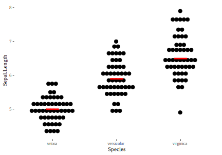
Graafiku loetavuse huvides on mõistlik on Cleveland plotil Y- telg sorteerida väärtuste järgi.
Järgmisel joonisel on näha irise tabeli Sepal length veeru keskmised koos 50% ja 95% usaldusintervallidega. Usaldusintervallid annavad hinnangu meie ebakindlusele keskväärtuse (mitte näiteks algandmete) paiknemise kohta, arvestades meie valimi suurust ja sellest tulenevat valimiviga. 50% CI tähendab, et me oleme täpselt sama vähe üllatunud leides tõese väärtuse väljaspoolt intervalli, kui leides selle intervalli seest. 95% CI tähendab, et me oleme mõõdukalt veendunud, et tõene väärtus asub intervallis (aga me arvestame siiski, et ühel juhul 20-st ta ei tee seda). NB! Mõlemad tõlgendused eeldavad (vähemalt senikaua, kuni me kasutame ad hoc lahendusi), et meie andmetes esinev juhuslik varieeruvus on palju suurem kui seal leiduv suunatud varieeruvus (ehk bias).
iris1 <- iris %>% group_by(Species) %>%
summarise(Mean = mean(Sepal.Length), SEM = sd(Sepal.Length)/sqrt(nrow(iris)))
ggplot(data= iris1, aes(x = Mean, y = Species)) +
geom_point(size=3) +
geom_errorbarh(aes(xmin = Mean - 0.675*SEM, xmax = Mean + 0.675*SEM), height = 0.2) +
geom_errorbarh(aes(xmin = Mean - 1.96*SEM, xmax = Mean + 1.96*SEM), height = 0.4) +
theme_bw() +
theme(panel.grid.major.x = element_blank(),
panel.grid.minor.x = element_blank(),
panel.grid.major.y = element_line(colour = "grey60", linetype = "dashed"))+
labs(x = "Sepal length with 50% and 95% CI", y = NULL)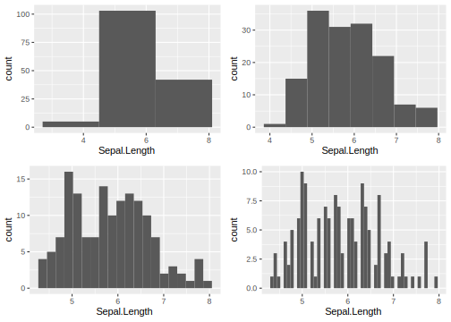
Alternatiivne graafiku kuju:
ggplot(data = iris1, aes(x = Mean, y = Species)) +
geom_point(size = 5, shape = 108) +
geom_errorbarh(aes(xmin = Mean - 0.675*SEM, xmax = Mean + 0.675*SEM), height = 0, size = 2) +
geom_errorbarh(aes(xmin = Mean - 1.96*SEM, xmax = Mean + 1.96*SEM), height = 0.1) +
theme_bw() +
theme(panel.grid.major.x = element_blank(),
panel.grid.minor.x = element_blank(),
panel.grid.major.y = element_line(colour = "grey60", linetype = "dashed"))+
labs(x = "Sepal length with 50% and 95% CI", y = NULL)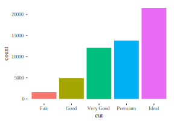
Pane tähele, et siin on usaldusintervallide arvutamiseks kasutatud kiiret ad hoc meetodit, mis eeldab muuhulgas, et valimi suurus ei ole väike. Kui n < 30, või kui valimi andmejaotus on väga kaugel normaaljaotusest (jaotus on näiteks väga pika õlaga), soovitame usaldusintervalli arvutamiseks kasutada bayesiaanlikke meetodeid, mida tutvustame hilisemates peatükkides. Igal juhul, kui valimi suurus on piisav ja normaaljaotus pole meie andmetest liiga kaugel, siis saame kasutada järgmisi heuristikuid:
#> # A tibble: 7 x 2
#> CI_percentage nr_of_SEMs
#> <dbl> <dbl>
#> 1 50.0 0.675
#> 2 75.0 1.15
#> 3 90.0 1.64
#> 4 95.0 1.96
#> 5 97.0 2.17
#> 6 99.0 2.58
#> # ... with 1 more rowSEM on standardviga ja selle arvutame jagades valimi standardhälbe ruutjuurega valimi suurusest.
Järgneb alternatiivne viis sama arvutust teha:
Järgmiseks plotime irise liikide Sepal.length andmete keskmise koos 50% ja 95% protsentiil intervallidega. Protsentiil intervallid näitavad piirkonda mis sisaldab, antud näite põhjal, vastavalt 50% ja 95% andmeid.
Kõigepealt arvutame igale irise liigile Sepal.Length usaldusintervallid ja keskväärtuse kasutades percentile_intervals funktsiooni, soovitavad usaldusintervallid spetsifitseeritakse argumendiga prob = c(0, 0.5, 0.95). Kusjuures, 0% andmeid sisaldav piirkond asub keskväärtusel.
iris_sepal_length_pi <- iris %>%
group_by(Species) %>%
do(percentile_intervals(.$Sepal.Length, prob = c(0, 0.5, 0.95)))
iris_sepal_length_pi
#> # A tibble: 3 x 6
#> # Groups: Species [3]
#> Species `3%` `25%` `50%` `75%` `98%`
#> <fct> <dbl> <dbl> <dbl> <dbl> <dbl>
#> 1 setosa 4.40 4.80 5.00 5.20 5.70
#> 2 versicolor 5.00 5.60 5.90 6.30 6.88
#> 3 virginica 5.62 6.22 6.50 6.90 7.70Saadud summaarseid andmeid kasutame graafiku loomiseks. Y-telje väärtused on kõigile geoomidele sama ggplot(aes(y = Species)). Lisame geoomid, kõigepealt paneme paika keskmise kasutades punkti geoomi geom_point(). Seejärel lisame ükshaaval usalduspiirid kasutades horisontaalsete veapiiride geoomi geom_errorbarh(). Arumendid height = 0, size = 1.5 määravad antud juhul, vastavalt, veapiiri otstes olevate “vuntside” kõrgust ja joone paksust.
iris_sepal_length_pi %>%
ggplot(aes(y = Species, x = `50%`)) +
geom_point( size = 3) +
geom_errorbarh(aes(xmin = `3%`, xmax = `98%`), height = 0.2) +
geom_errorbarh(aes(xmin = `25%`, xmax = `75%`), height = 0, size = 1.5) +
theme(axis.title.y = element_blank()) +
labs(x = "Mean Sepal length with 50% and 95% percentile interval")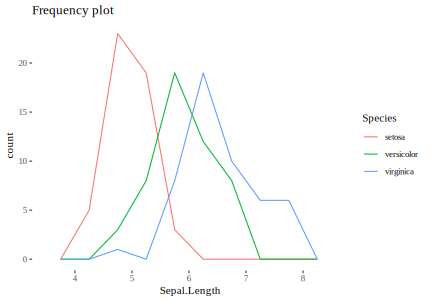
Sellel joonisel on näha irise tabeli Sepal length veeru keskmised (punkt) koos 50% (rasvane joon) ja 95% (vuntsid) usaldusintervallidega.
8.2 2. Andmepunktid mediaani või aritmeetilise keskmisega
x - faktormuutuja; y - pidev muutuja
Kui N < 20, siis on see tavaliselt parim valik sest säilitab maksimaalselt andmetes leiduvat informatsiooni.
ggplot(iris, aes(x=Species, y=Sepal.Length)) +
geom_jitter(width = 0.05)+
stat_summary(fun.y = median, geom = "point", shape = 95,
color = "red", size = 15, alpha=0.6) +
labs(x=NULL) +
theme_tufte()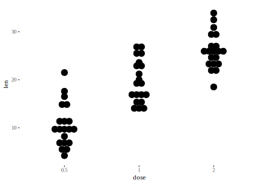
Siin on meil lausa 50 andmepunkti iga Irise liigi kohta ja graafik on ikkagi täitsa hästi loetav.
Meil on võimalik teha sellest graafikust versioon, mis ei pane andmepunkti y skaalal täpselt õigesse kohta, vaid tekitab histogrammilaadsed andmebinnid, kus siiski iga punkt on eraldi näidatud. See lihtsustab veidi “kirjude” kompleksete andemsettide esitust. Kuid kaotab informatsiooni andmepunktide täpse asukoha kohta. Siin on eesmärk muuta graafik kiiremini loetavaks, ehk erinevused gruppide vahel paremini võrreldavaks.
p<-ggplot(iris, aes(x=Species, y=Sepal.Length)) +
geom_dotplot(binaxis='y', stackdir='center', stackratio=1.3, dotsize=0.7)
p + stat_summary(fun.y = median, geom = "point", shape = 95,
color = "red", size = 15)
#try using shape=18, size=5.
#add mean and SD, use pointrange:
p + stat_summary(fun.data=mean_sdl, fun.args = list(mult=1), geom="pointrange", color="red")
#use errorbar instead of pointrange:
#p + stat_summary(fun.data=mean_sdl, fun.args = list(mult=1), geom="errorbar", color="red", width=0.2, size=1) + stat_summary(fun.y=mean, geom="point", size=3, color="red")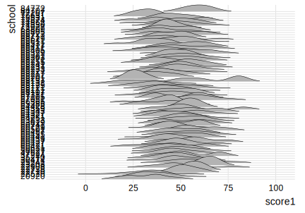
Muuda punktide värvi nii:
scale_fill_manual() : to use custom colors
scale_fill_brewer() : to use color palettes from RColorBrewer package
scale_fill_grey() : to use grey color palettes
8.3 3. Histogramm
x - pidev muutuja
Kui teil on palju andmepunkte (>50) ning soovite uurida nende jaotust (ja/või võrrelda mitme andmestiku jaotust) siis tasub kindlasti alustada histogrammist. Histogrammi koostamine näeb välja järgmine:
- ploti andmepunktid x - teljele (järgnev on põhimõtteliselt ühedimensionaalne plot, kuigi andmepunktid on üksteise suhtes veidi nihutatud, et nad üksteist ei varjutaks).
stripchart(iris$Sepal.Length, method = "jitter")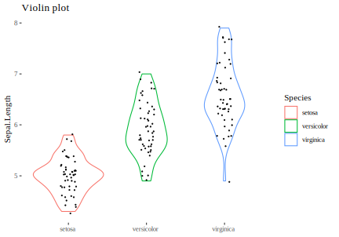
- jaga andmestik x-teljel võrdse laiusega vahemikesse (binnidesse)
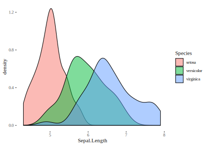
- loe kokku, mitu andmepunkti sattus igasse binni. Näiteks on meil viimases binnis (7.5 … 8) kuus anmdepunkti
- ploti iga bin tulpdiagrammina (y- teljel on tüüpiliselt andmepunktide arv)
ggplot(iris, aes(x=Sepal.Length)) + geom_histogram(breaks= seq(4, 8, by=0.5), color="white")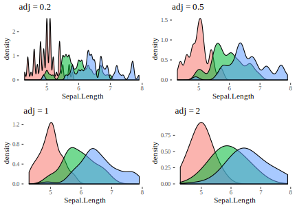
Tavaliselt on siiski mõistlik määrata histogrammi binnide laius ja asukoht mitte breaks argumeniga vaid kas argumendiga bins, mis annab binnide arvu, või argumendiga binwidth, mis annab binni laiuse. Vt ka geom_boxplot() funktsiooni helpi.
NB! Väga tähtis on mõista, et binnide laius on meie suva järgi määratud. Samade andmete põhjal joonistatud erineva binilaiusega histogrammid võivad anda lugejale väga erinevaid signaale.
library(gridExtra)
g1 <- ggplot(iris, aes(Sepal.Length)) + geom_histogram(bins = 3)
g2 <- ggplot(iris, aes(Sepal.Length)) + geom_histogram(bins = 8)
g3 <- ggplot(iris, aes(Sepal.Length)) + geom_histogram(bins = 20)
g4 <- ggplot(iris, aes(Sepal.Length)) + geom_histogram(bins = 50)
grid.arrange(g1, g2, g3, g4, nrow = 2)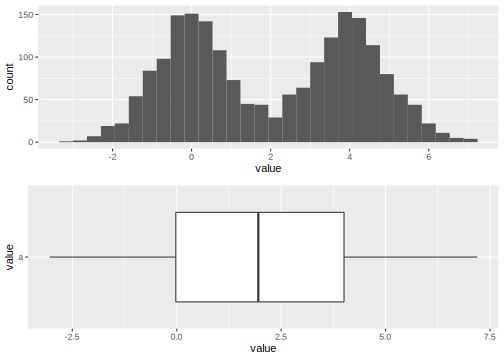
Seega on tasub joonistada samadest andmetest mitu erineva binnilaiusega histogrammi, et oma andmeid vaadata mitme nurga alt.
Kui tahame võrrelda mitmeid jaotusi, siis on meil järgmised variandid:
Kõigepealt, me võime panna mitu histogrammi üksteise alla. Selleks kasutame facet_grid funktsiooni ja paneme joonisele ka hallilt summaarsete andmete histogrammi. Selle funktsioon on pakkuda joonise lugejale ühtset võrdlusskaalat üle kolme paneeli.
d_bg <- iris[, -5] # Background Data - full without the 5th column (Species)
ggplot(data = iris, aes(x = Sepal.Length, fill = Species)) +
geom_histogram(data = d_bg, fill = "grey", alpha=0.8, bins=10) +
geom_histogram(colour = "black", bins=10) +
facet_grid(Species~.) +
guides(fill = FALSE) + # to remove the legend
theme_tufte() # for clean look overall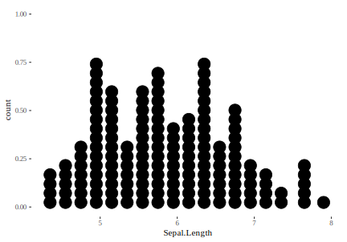
Teine võimalus on näidata kõiki koos ühel paneelil kasutades histogrammi asemel sageduspolügoni. See töötab täpselt nagu histogramm, ainult et tulpade asemel joonistatakse binnitippude vahele jooned. Neid on lihtsam samale paneelile üksteise otsa laduda.
ggplot(iris, aes(Sepal.Length, color=Species)) + geom_freqpoly(breaks= seq(4, 8, by=0.5)) + theme_tufte()+ labs(title="Frequency plot")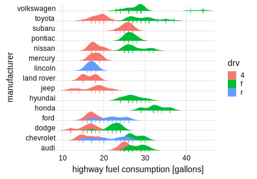
Selle “histogrammi” binne saab ja tuleb manipuleerida täpselt samamoodi nagu geom_histogrammis.
Veel üks hea meetod histogrammide võrdlemiseks on joonistada nn viiuliplot. See asendab sakilise histogrammi silutud joonega ja muudab seega võrdlemise kergemaks. Viiulile on ka kerge lisada algsed andmepunktid
ggplot(iris, aes(Species, Sepal.Length)) + geom_violin(aes(color=Species))+
geom_jitter(size=0.2, width=0.1) + labs(title="Violin plot", x=NULL)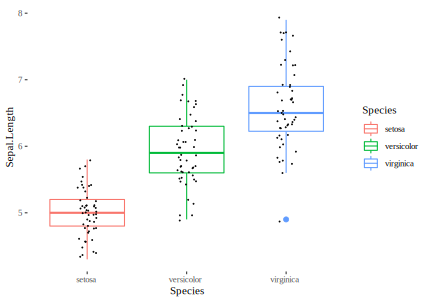
8.4 3. Tihedusplot
Hea alternatiiv histogrammile on joonistada silutud andmejaotus, mis käitub silutud histogrammina.
ggplot(iris, aes(Sepal.Length, fill=Species)) + geom_density(alpha=0.5)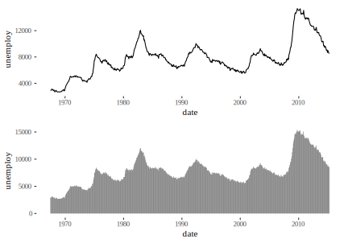
Adjust parameeter reguleerib silumise määra. 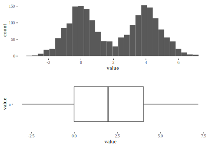
Veel üks võimalus jaotusi kõrvuti vaadata on joyplot, mis paneb samale paneelile kasvõi sada tihedusjaotust.
library(ggjoy)
ggplot(iris, aes(x=Sepal.Length, y=Species, fill=Species)) +
geom_joy(scale=4, rel_min_height=0.01, alpha=0.9) +
theme_joy(font_size = 13, grid=TRUE) +
theme(legend.position = "none")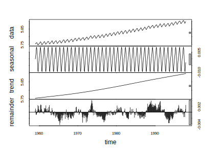
sch <- read.csv("data/schools.csv")
sch$school <- as.factor(sch$school)
ggplot(sch, aes(score1, y=reorder(school, score1))) +
geom_joy() + theme_tufte()
#> Warning: Removed 202 rows containing non-finite values
#> (stat_density_ridges).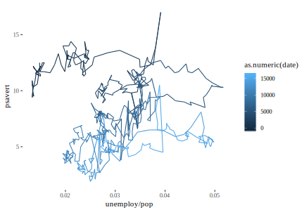
8.5 4. Boxplot
See plot mõeldi välja John Tukey poolt arvutieelsel ajastul (1969), ja see võimaldab millimeeterpaberi ja joonlaua abil võrrelda erinevaid jaotusi. Biomeditsiinis sai boxplot ülipopulaarseks veidi hilinenult, ca. 2010-2015. Inimese jaoks, kes oskab arvutit kasutada, võib viiulite joonistamine tunduda atraktiivsem (ja informatiivsem), aga kui võrreldavaid jaotusi on päris palju, siis võib ka boxploti kandiliselt lihtsusel eeliseid leida. Igal juhul käib klassikalise boxploti konstrueerimine järgevalt.
joonista andmepunktid 1D-s välja (nagu me tegime histogrammi puhul)
keskmine andmepunkt on mediaan. Selle kohale tuleb boxplotil keskmine kriips
ümbritse kastiga pooled andmepunktid (mõlemal pool mediaani). Nii määrad nn. interkvartiilse vahemiku (IQR).
pooleteistkordne IQR (y-telje suunas) annab meile vurrude maksimaalse pikkuse. Vurrud joonistatakse siiski ainult kuni viimase andmepunktini (aga kunagi mitte pikemad kui 1.5 IQR)
andmepunktid, mis jäävad väljaspoole 1.5 x IQR-i joonistatakse eraldi välja kui outlierid.
ggplot(iris, aes(Species, Sepal.Length, color = Species)) +
geom_boxplot()+
geom_jitter(width = 0.1, size=0.1, color="black")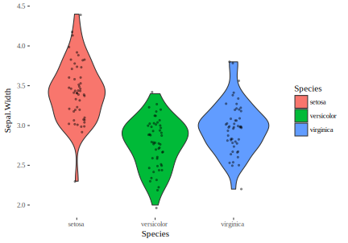
Boxplotile saab lisada ka aritmeetilise keskmise (järgnevas punase täpina), aga pea meeles, et boxploti põhiline kasu tuleb sellest, et see ei eelda sümmeetrilist andmejaotust. Seega on mediaani lisamine üldiselt parem lahendus.
ggplot(iris, aes(Species, Sepal.Length, color = Species)) +
geom_boxplot()+ stat_summary(fun.y=mean,col='red', geom='point', size=2)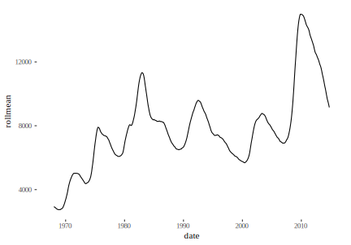
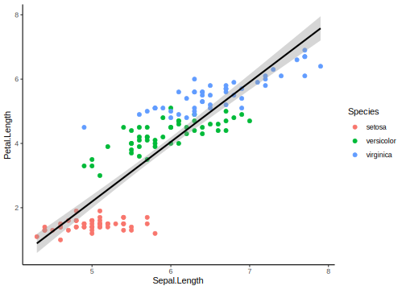
See pilt näitab, et kui jaotus on mitme tipuga, siis võib boxplotist olla rohkem kahju kui kasu.
8.6 5. Joongraafikud
x - pidev muutuja (aeg, konsentratsioon, jms); y - pidev muutuja
Joongraafik (geom_line) töötab hästi siis, kui igale x-i väärtusele vastab unikaalne y-i väärtus ja iga kahe mõõdetud x-i väärtuse vahele jääb veel x-i väärtusi, mida pole küll mõõdetud, aga kui oleks, siis vastaks ka neile unikaalsed y-i väärtused. Lisaks me loodame, et y-i suunaline juhuslik varieeruvus ei ole nii suur, et maskeerida meid huvitavad trendid. Kui tahad näidata, kus täpselt muutus toimus, kasuta geom_step funktsiooni.
recent <- economics[economics$date > as.Date("2013-01-01"), ]
ggplot(recent, aes(date, unemploy)) + geom_line()
ggplot(recent, aes(date, unemploy)) + geom_step()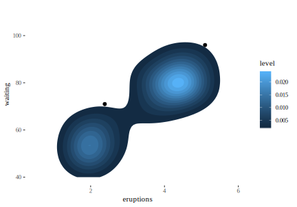
Astmeline graafik on eriti hea olukorras, kus astmete vahel y-dimensioonis muutust ei toimu – näiteks piimapaki hinna dünaamika poes.
Geom_path võimaldab joonel ka tagasisuunas keerata.
# geom_path lets you explore how two variables are related over time,
# e.g. unemployment and personal savings rate
m <- ggplot(economics, aes(unemploy/pop, psavert))
m + geom_path(aes(colour = as.numeric(date)))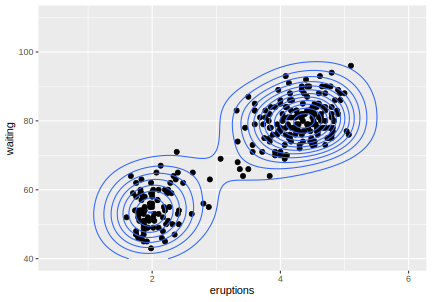
Tulpdiagramm juhib lugeja tähelepanu väikestele teravatele muutustele. Kui see on see, millele sa tahad tähelepanu juhtida, siis kasuta seda.
p1 <- ggplot(economics, aes(date, unemploy)) + geom_line()
p2 <- ggplot(economics, aes(date, unemploy)) + geom_bar(stat="identity")
grid.arrange(p1, p2, nrow = 2)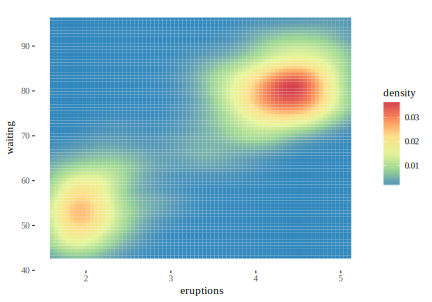
Et mürarikkaid andmeid siluda kasutame liikuva keskmise meetodit. Siin asendame iga andmepunkti selle andmepunkti ja tema k lähima naabri keskmisega. k on tavaliselt paaritu arv ja mida suurem k, seda silutum tuleb tulemus.
library(zoo)
economics$rollmean <- rollmean(economics$unemploy, k = 13, fill = NA)
ggplot(economics, aes(date, rollmean)) + geom_line()
#> Warning: Removed 12 rows containing missing values
#> (geom_path).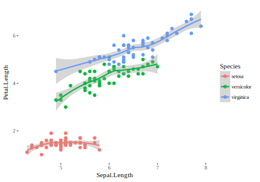
Kui on oht, et ebahuvitavad tsüklid ja trendid varjutavad veel mingeid mustreid, mis meile võiks huvi pakkuda, võib proovida lahutada aegrea komponentideks kasutades seasonaalset lahutamist (Seasonal decomposition). R::stl() kasutab selleks loess meetodit lahutades aegrea kolmeks komponendiks. 1) trendikomponent püüab keskmise taseme muutusi ajas. 2) seasonaalne komponent lahutab muutused aastaaegade lõikes (konstantse amplituudiga tsüklilisus aegrea piires) ja 3) irregulaarne komponent on see, mis üle jääb. aegrea osadeks lahutamine võib olla additiivne või mulitlikatiivne. Additiivses mudelis
\[Y_t = Trend_t + Seasonal_t + Irregular_t\]
summeeruvad komponendid igas punktis algesele aegreale. Muliplikatiivses mudelis
\[Y_t = Trend_t * Seasonal_t * Irregular_t\] tuleb selleks teha korrutamistehe.
Näiteks lahutame aegrea, mis käsitleb CO_2 konsentratsiooni muutusi viimase 50 aasta vältel.
require(graphics)
#co2 is a time series object
#stl() takes class "ts" objects only!
plot(stl(co2, "per"))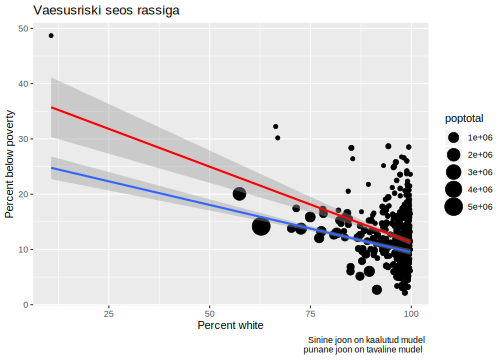
8.6.1 Tulpdiagrammid mõõdavad counte ja proportsioone
str(diamonds)
#> Classes 'tbl_df', 'tbl' and 'data.frame': 53940 obs. of 10 variables:
#> $ carat : num 0.23 0.21 0.23 0.29 0.31 0.24 0.24 0.26 0.22 0.23 ...
#> $ cut : Ord.factor w/ 5 levels "Fair"<"Good"<..: 5 4 2 4 2 3 3 3 1 3 ...
#> $ color : Ord.factor w/ 7 levels "D"<"E"<"F"<"G"<..: 2 2 2 6 7 7 6 5 2 5 ...
#> $ clarity: Ord.factor w/ 8 levels "I1"<"SI2"<"SI1"<..: 2 3 5 4 2 6 7 3 4 5 ...
#> $ depth : num 61.5 59.8 56.9 62.4 63.3 62.8 62.3 61.9 65.1 59.4 ...
#> $ table : num 55 61 65 58 58 57 57 55 61 61 ...
#> $ price : int 326 326 327 334 335 336 336 337 337 338 ...
#> $ x : num 3.95 3.89 4.05 4.2 4.34 3.94 3.95 4.07 3.87 4 ...
#> $ y : num 3.98 3.84 4.07 4.23 4.35 3.96 3.98 4.11 3.78 4.05 ...
#> $ z : num 2.43 2.31 2.31 2.63 2.75 2.48 2.47 2.53 2.49 2.39 ...loeb üles, mitu korda esineb iga cut
ggplot(diamonds) +
geom_bar(aes(x = cut, fill = cut)) +
theme(legend.position="none")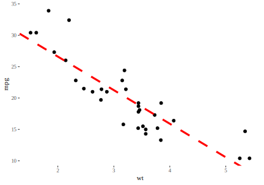
Pane tähele, et y-teljel on arv, mitu korda esineb tabelis iga cut. See arv ei ole tabelis muutuja. geom_bar, geom_hist, geom_dens arvutavad plotile uued y väärtused — nad jagavad andmed binidesse ja loevad üles, mitu andmepunkti sattus igasse bini.
Kui tahad tulpdiagrammi proportsioonidest, mitu korda eineb tabelis igat cut-i, siis tee nii:
ggplot(diamonds) +
geom_bar(aes(x = cut, y = ..prop.., group = 1))Pane tähele et tulpade omavahelised suhted jäid samaks. Muutus ainult y-telje tähistus.
Edasi lisame eelnevale veel ühe muutuja: clarity. Nii saame üles lugeda kõigi cut-i ja clarity kombinatsioonide esinemise arvu või sageduse. Erinvate clarity tasemete esinemiste arv samal cut-i tasemel on siin üksteise otsa kuhjatud, mis tähendab, et tulpade kõrgus ei muutu võrreldes eelnevaga.
ggplot(diamonds) +
geom_bar(aes(x = cut, fill = clarity))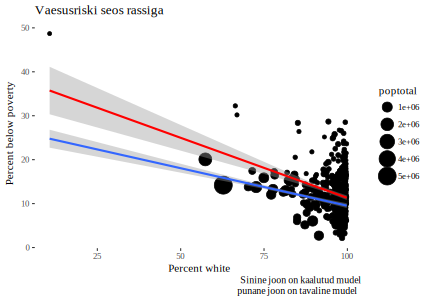
Kui me tahame, et cut-i ja clarity kombinatsioonid oleks kastidena ükteise sees, pigem kui üksteise otsa kuhjatud, siis kasutame position = “identity” argumenti.
ggplot(diamonds, aes(x = cut, fill = clarity)) +
geom_bar(alpha = 0.7, position = "identity") 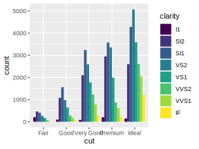
ka see graafik pole väga lihtne lugeda. Parem viime clarity klassid üksteise kõrvale
ggplot(data = diamonds, aes(x = cut, fill = clarity)) +
geom_bar(position = "dodge")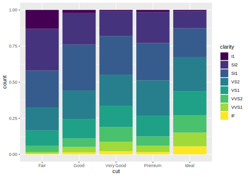
Eelnev on hea viis kuidas võrrelda clarity tasemete esinemis-sagedusi ühe cut-i taseme piires.
Ja lõpuks, position=“fill” normaliseerib tulbad, mis muudab selle, mis toimub iga cut-i sees, hästi võrreldavaks. See on hea viis, kuidas võrrelda clarity tasemete proportsioone erinevate cut-i tasemete vahel.
ggplot(data = diamonds, aes(x = cut, fill = clarity)) +
geom_bar(position = "fill")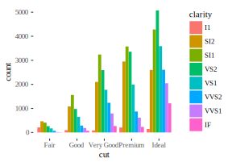
Ja lõpuks, kui te tahate teha midagi, mis on enamasti keskmiselt rumal valik, ehk plottida tulpdiagrammi viisil, et tulba kõrgus vastaks tabeli ühes lahtris olevale numbrile, mitte faktortunnuse esinemiste arvule tabelis, siis kasutage: geom_bar(stat = "identity")
df <- tibble(a=c(2.3, 4, 5.2), b=c("A", "B", "C"))
ggplot(df, aes(b, a)) + geom_bar(stat = "identity")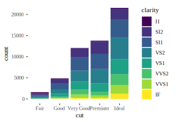
8.6.2 Kahe muutuja koos-varieeruvus
X-teljel on geisri Old Faithful pursete tugevus ja y-teljel pursete vaheline aeg. Kui kahe purske vahel kulub rohkem aega, siis on oodata tugevamat purset. Tundub, et see süsteem töötab kahes diskreetses reziimis.
m <- ggplot(faithful, aes(x = eruptions, y = waiting)) +
geom_point() +
xlim(0.5, 6) +
ylim(40, 110)
#m + stat_density_2d(aes(fill = ..level..), geom = "polygon")
m + geom_density_2d()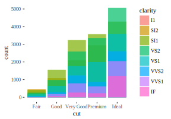
Kui punkte on liiga palju, et välja trükkida, kasuta geom = “polygon” varianti.